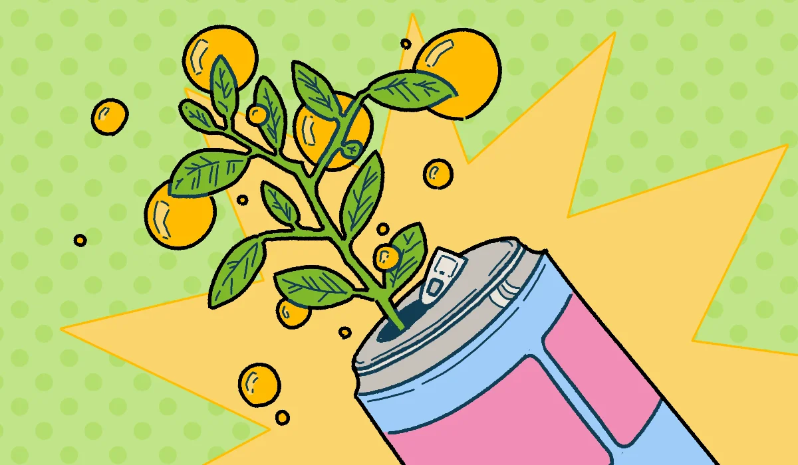

Verbindend, fris en vol energie: een duik in de opkomst van maté
Maté-frisdranken winnen aan populariteit in Nederland. Als alternatief voor gangbare energiedranken, is maté vooral gewild in creatieve en bewuste kringen. Waar komt deze groei vandaan?
7 September 2024 | Eindredactie Evi Verheij | Cover Paulien Kraaijeveld
Een way of life
Lars van Kranenburg (26), medeoprichter van Mojo Maté, is een gepassioneerd verteller van het verhaal achter zijn product. Tijdens een tocht op een gletsjer in Patagonië, Chili, kwam hij voor het eerst in aanraking met maté. Zijn gids pakte een vreemd uitziende beker (een ‘calabaza’, gemaakt van een uitgeholde pompoen, zo ontdekte hij later) uit zijn tas en zette daar thee in van gedroogde bladeren. De bladeren waren afkomstig van de matéplant, waarvan de werking eeuwen geleden werd ontdekt door inheemse stammen: het drinken van thee van de bladeren geeft energie en zorgt ervoor dat je gefocust blijft. De calabaza werd rondgedeeld, uit een speciaal filterrietje dronken ze samen van de thee. Het drinken van maté is een sociaal ritueel in veel Zuid-Amerikaanse landen. Tijdens de COVID-19 pandemie was een van de belangrijkste regels in Argentinië zelfs dat je geen maté mocht delen. “Het is daar echt een way of life, ze worden wakker met maté en drinken het de hele dag door,” aldus Lars. Samen met zijn reisgenoot begon hij na thuiskomst een webshop waarop ze gedroogde maté-bladeren, calabaza’s en filterrietjes verkochten en het verhaal achter de inheemse maté-traditie deelden. Al snel bleek echter dat het Nederlandse publiek zich moeilijk kon bekeren tot warme maté. Sommige mensen gingen de maté koud drinken, met ijsklontjes, citroensap en munt, vertelt Lars. Dat is ook heel populair in Paraguay en op de stranden van Rio de Janeiro, waar verkopers tussen de handdoekjes doorlopen en ‘iced maté’ verkopen. Zo ontstond het idee om een frisdrank produceren: “We wilden het gevoel van delen en de goede energie combineren in een ready-to-drink variant.” Het resultaat is “een zo natuurlijk mogelijk product, zo dicht mogelijk bij de smaak en de beleving van maté. We zetten het neer als een nieuw cafeïne alternatief. Net als koffie, maar dan op een frisse manier.”
Met z'n allen
Inmiddels is Mojo Maté te koop in alle Nederlandse filialen van Albert Heijn. De kleurrijke blikjes, geïnspireerd door het creatieve Vila Madalena in São Paolo, belichamen de waarden achter het jonge bedrijf. Naast creativiteit en duurzaamheid staat vooral inclusiviteit hoog op de agenda. “Maté drinken is in de traditie iets dat iedereen doet. Je kunt ook met wildvreemde mensen maté drinken, het is een middel om mensen samen te brengen,” licht Lars toe. Veel mensen delen de waarden die Mojo Maté uitdraagt, en daarmee onderscheidt het zich van andere energydrinks. Met name mensen in creatieve sectoren slaan aan op het drankje: “Die zijn geneigd om het net even anders te doen, om iets anders te drinken.” Het uit Zwitserland overgewaaide El Tony Mate richt zich eveneens op creatievelingen. “Als je mensen uit de creatieve industrie aan boord hebt, dan volgt de rest vanzelf,” vertelt een medewerker die verantwoordelijk is voor de groei van het merk in Nederland. Ondersteund door een flinke dosis enthousiasme laat hij anderen graag kennis maken met zijn maté. Volgens hem zit de kracht van El Tony Mate in de combinatie van een overtuigend verhaal en een goed product. Dit sluit goed aan op een grote groep jonge mensen die steeds bewustere keuzes maakt op het gebied van onder andere duurzaamheid en gezondheid. Hij ziet de opkomst van maté-frisdranken als een welkome beweging tegen ongezonde energydrinks. “Van een koffie of twee kun je best wel trillerig worden en ook weer een crash krijgen, bij energydrankjes vol suiker al helemaal. Daardoor gaan mensen alleen maar meer drinken en zich ook weer extra moe voelen.” Maté zorgt juist voor een geleidelijke energie boost en een scherpere focus. Recent onderzoek naar maté in het wetenschappelijke tijdschrift Nutrients laat zien dat dit het gevolg is van het stofje theobromine, dat een ontspannende werking heeft. Cafeïne zorgt voor een vernauwing van de bloedvaten en een verhoging van de bloeddruk, terwijl theobromine de bloedvaten juist ontspant. Koffie en energydrinks bevatten hoofdzakelijk cafeïne, terwijl maté ook theobromine bevat. Overigens geldt voor maté net als voor koffie en energydrinks dat een te grote hoeveelheid negatieve uitwerkingen kan hebben. “Drink maté dus met mate,” grapt de medewerker van El Tony Mate hierover.
Nieuwe energie
El Tony Mate richt zich onder andere op het nachtleven. Sommige feestgangers drinken El Tony Mate met een scheut vodka er in (de zogenaamde ‘Turbo Tony’), maar maté biedt juist ook een goed alternatief op alcohol. Eén van hun ambities? “Mensen kennis laten maken met de functionaliteit van maté in de avond en nacht.” Dat mensen alcohol verruilen voor een gezonde energydrink sluit volgens Lars aan op een bredere trend in functional drinks: lekkere, verantwoorde drankjes met een positief effect op je lichaam. Waar bijvoorbeeld kombucha goed is voor je darmflora, geeft maté een energie boost. Daarnaast wordt in tal van wetenschappelijke artikelen gerefereerd aan andere gezondheidsvoordelen van maté, bijvoorbeeld voor het cardiovasculaire systeem en centrale zenuwstelsel. Over effectgroottes lijkt overigens geen consensus te bestaan.
Maté drinken is in de traditie iets dat iedereen doet
Ondanks deze trend is maté-frisdrank volgens de medewerker van El Tony Mate nog redelijk niche. Of groei mogelijk is staat in beide gesprekken echter buiten discussie. “Ik hoop dat de categorie in zijn geheel gaat groeien, en dat mensen aan maté zullen denken als ze energie nodig hebben. Dat we echt een categorie kunnen bouwen met vaste waarde,” vertelt Lars. Groei brengt echter ook risico’s met zich mee. Lars vertelt daarover dat Mojo Maté “geen concessies gaat doen op kwaliteit,” en dat het voor hem heel belangrijk is om dicht bij hun waarden te blijven staan en te blijven werken met de partners waar ze nu mee werken. Het succes van El Tony Mate in Zwitserland, waar “mensen sowieso wat bewuster zijn,” maakt dat er vertrouwen is in de toekomst. Mensen zijn gewend energie te halen uit koffie of energydrinks en de behoefte aan energie zal volgens hem niet minder worden. Maté biedt een andere vorm van energie. Of maté-frisdrank ook een serieuze concurrent gaat worden van grote energydrinks? “Dat mag je zelf invullen.” De supermarkten waar maté-frisdrank te verkrijgen is, bedelen het momenteel een bescheiden plek toe. Samen met kombucha’s en andere functional drinks vormt het slechts een klein deel van het totale aanbod aan frisdranken en energydrinks. In de (Amsterdamse) horeca is de beschikbaarheid van maté eerder de uitzondering dan de regel. Voorlopig lijkt het drankje dus vooral aan te slaan in creatieve kringen waarin men zich positioneert als bewust en vooruitstrevend. De tijd zal leren of zij dezelfde culturele invloed hebben als de Berlijnse ravers en hackers uit de jaren ’90.